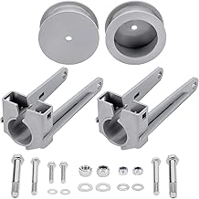
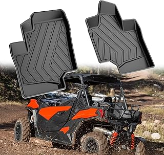
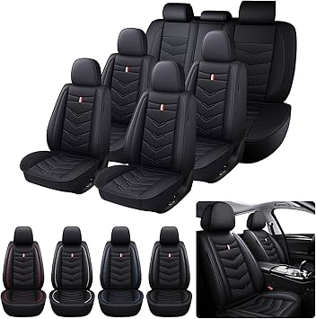
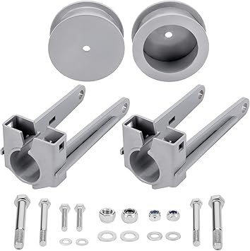
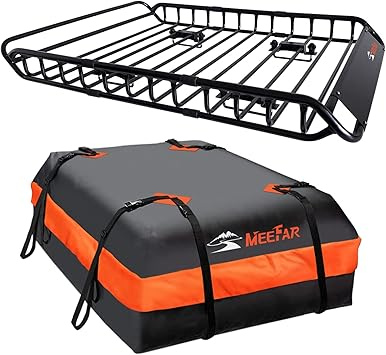
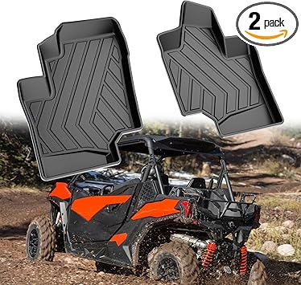
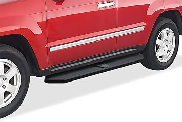

← Back to commanderupgrades.com
Updated May 2026
Shopping for commanderupgrades can be overwhelming with so many options on the market in 2026. Whether you're a first-time buyer or upgrading from an older model, knowing what to look for makes all the difference.
Before making a purchase, consider these factors that separate great commanderupgrades from mediocre ones:
We see the same mistakes over and over from buyers in the commanderupgrades space:



⭐ 4.4 · $82.99
⭐ 4.3 · $199.95
⭐ 4.0 · $103.99
$228.88
We've tested and reviewed dozens of options. Check our full commanderupgrades rankings for detailed comparisons, or browse our top picks below.

→ Check Price on Amazon → — Highly rated by verified buyers

→ Check Price on Amazon → — Highly rated by verified buyers

→ Check Price on Amazon → — Highly rated by verified buyers

→ Check Price on Amazon → — Highly rated by verified buyers

→ Check Price on Amazon → — Highly rated by verified buyers
The commanderupgrades market keeps evolving, and 2026 has brought some genuinely impressive options. Whether you're after premium quality or the best value, there's something for every budget. We update our rankings regularly, so bookmark commanderupgrades.com and check back for the latest reviews.